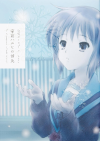

2021/8/26 上野さん初購入記念日


2023/7/11 エロマンガ先生再認知記念日


2023/12/2 黒猫とあやせに一目惚れ記念日


2024/1/14 わたハズイベント参加記念日


2024/3/23 ハルヒちゃんと憂鬱が面白すぎた記念日


2024/12/15 ニャル子さん推薦記念日
2024/12/22「這いよれ！ニャル子さんW 未知なるアプリを夢に求めて」初プレイ記念日
現在シーズン8放送中！(12/26更新！)
SS:95~ S:91~ S-/AA:90 A+:80~ A:70~ A-:61~ BB:60 B+:50~ B:40~ B-:31~ CC:30 C:~20 PTE:-1
| 点数 | シーズン・チャプター数 | 画像 | 作品名 | ハマった日/時期 | 記念日(太字は指定重要記念日 | 思い出 |
|---|---|---|---|---|---|---|
| 39 | S1C1 | |
斉木楠雄のΨ難 | 2018年10月上旬 | 2018/10/12 初めて漫画にハマった記念日 | 初めてハマった作品。超能力者とか、いかにも少年が好きそうなやつ。週刊少年ジャンプだし、まだまだ健全だったよ。 |
| 45 | S1C1 | |
暗殺教室 | 2019年 | 次にハマったやつ。珍しくシリアス系だが、前回から引き続き学園モノである。ん？ | |
| 60 | S1C2 | |
銀魂 | 2020年 | たまたまチバテレで再放送してるところを見てたらめっちゃ面白かった。前回から引き続きシリアス・戦闘系だがギャグ要素が強すぎるからセーフ。 | |
| 55 | S1C3 | |
Splatoon | 2020年下半期 | Splatoonに漫画があると知ってネットで試し読みしたらめっちゃ面白かった。二シリーズともくだらなくてギャグ99割なのが面白い。 | |
| 54 | S1C3 | |
Splatoon イカすキッズ4コマフェス | 2020年下半期 | 上に同じ | |
| 50 | S2C1 | |
イジらないで、長瀞さん。 | 2021/4/10 | 2021/4/10 すべての始まり記念日 | 人生初の完全ラブコメである。テレビCMを見てハマったが、対象年齢が12歳以上と当時11歳だった俺は相当ビビってた記憶がある。今となっては懐かしい（笑）Amazonで批評的なレビューを見るたびに「わかってないなー」と思っていた。ところで、まわりは五等分の花嫁を見ていたが、俺はハマらなかった。なぜだろう。 |
| 98 | S2C2 | |
上野さんは不器用 | 2021/8/22日 | 2021/8/22 長瀞さん以来久しぶりにラブコメが面白いと思った記念日 2021/8/26 上野さん初購入記念日 |
対象年齢15歳以上。エロすぎる。今も好き。最高。俺的神作品の内の一つ。 |
| 59 | S2C3 | |
300年封印されし雅龍ちゃんと友達になりました | 2022/2/19 | 長瀞みてたら広告に出てきたやつ。ちょっと見てみたら面白くてね。漫画を速攻ポチったわけですよ。ラインのアイコンにしてた時期がある。このときは小6の2月ということでやり放題。これ学校に持って行ってた。最後のページがエロすぎてヤバい。 | |
| 59 | S2C3 | |
現実もたまには嘘をつく | 2022/3/18 | 初めて同人誌(全年齢)を買ったやつ。ネットで良さそうなの探してたときに、表紙に惹かれた。実際面白いから商業誌と同人誌を買ったわけなんだけど、雅龍ちゃんと同じで飽きているのが現状。。。 | |
| 90 | S2C4 | |
日常 | 2022年3月下旬 | 2022/4/2 初アキバ記念日 | 前から面白そうだと思ってたから買ってみた。初めて秋葉原行ったときに買った気がする。ラブコメ要素は無いが、めっちゃ面白い。 |
| 99 | S3C1 | |
東方Project | 2022/5/9 | 2022/5/9 東方夢想夏郷&幻想万華鏡初視聴記念日 | 推し、性癖の概念を知り、金銭感覚がぶっ壊れ、俺の人生に大きな影響を与えた。俺の7.3万(執筆時)は東方によって溶かされた。東方がなかったら、今よりちょっとだけ悪い人生を送っていたかもしれない。俺的神作品の内の一つ |
| -1 | S3C2 | |
ポプテピピック | 2022/8/11 | クソ | |
| 21 | S4C1 | |
ご注文はうさぎですか？ | 2022/12/4 | 前から知ってたから買ってみた①。1巻だけで充分だった。全巻買いなんてしなきゃよかった。でも良いとは思う。 | |
| 22 | S4C1 | |
魔法少女まどか☆マギカ | 2022/12/4 | 前から知ってたから買ってみた②。う～ん。戦闘+シリアスで俺には合わなかった。でも良いとは思う。 | |
| 20 | S4C1 | |
のんのんびより | 2022/12/4 | 前から知ってたから買ってみた③。にゃんぱすー以外興味なかった。全巻買いなんてしなきゃよかった。 | |
| 29 | S4C1 | |
らき☆すた | 2022/12/8 | 前から知ってたから買ってみた④最近(執筆時2023/12/5)色々やってるらしい。ずっと読もうと思って結局1巻も読んでない。 | |
| 30 | S4C1 | |
ぼっち・ざ・ろっく | 2022/12/11 | みんな面白いって言ってるし、実際キャラもストーリーも悪くないと思うけど、俺には合わなかった。けどギターやってみたいとかは思った。一番全巻買いなんてしなきゃよかった。 | |
| 93 | S4C2 | |
お兄ちゃんはおしまい！ | 2023/1/5 | 2023/1/5 おにまい初読記念日 | なんか面白そうだと思って見てみたら、面白かった。初めてのTS系。アニメとニコ生のコメントの組み合わせが最高に面白かった。俺的神作品の内の一つ。 |
| 94 | S5C1 | |
小林さんちのメイドラゴン | 2023/3/4 | 2023/3/4 メイドラアニメ初視聴記念日 | ハマるちょっと前に試し読みして面白いと思ったけど、一旦キープしたやつ。めっちゃ面白いしめっちゃエロい。ヒロインが初めて推しになった。やっぱトールだよな。俺的神作品の内の一つ。 |
| 95 | S6C1 | |
エロマンガ先生 | 2023/7/11 | 2021/4/13 エロマンガ先生認知記念日 2023/7/11 エロマンガ先生再認知記念日 |
長瀞の一コマに「エロマンガセンセー」というワードが出てきたのが始まり。当時はハマんなかったけど、二年の月日を経て無事ハマる。原作のイラストレータのかんざきひろ氏は本当に凄い人で、スネ夫のやつと同じ人だってわかったときの衝撃がヤバかった。詳しくは「スネ夫がEDMフェスで踊っているときに流れている曲（フル）」で検索。俺的神作品の内の一つ。 |
| 93 | S6C1 | |
お隣の天使様にいつの間にか駄目人間にされていた件 | 2023/7/14 | 2023/7/14 天使様に一目惚れ記念日 | エロマンガ先生のスピンオフの作画を担当した優木すずさんの作品一覧をAmazonで見てたら出てきたやつ。表紙に惹かれた。初めてのなろう系。2日前にハマったエロマンガ先生に比べてギャグ要素は少ないがラブコメ要素が濃すぎる。面白い。俺的神作品の内の一つ。 |
| 96 | S6C2 | |
俺の妹がこんなに可愛いわけがない | 2023/9/13(12/2) | 2023/9/13 俺妹コミック初購入記念日 2023/12/2 黒猫とあやせに一目惚れ記念日 |
元々エロマンガ先生の伏見つかさ×かんざきひろということで気になってはいた。最初は気に入らなかったが、アニメを見ていくうちにどんどん引きずり込まれていった。十年前のアキバとかオタク事情とかちょっと今の俺には刺さりすぎる。 |
| 90 | S6C2 | |
ねこシス | 2023/12/26 | 伏見つかさ×かんざきひろワールドに入りたかった。いつもと読む系統が違うが、やはり面白かった。 | |
| 97 | S6C3 | |
私の初恋は恥ずかしすぎて誰にも言えない | 2023/11/17 | 2023/11/17 わたハズ発表記念日 2024/1/14 わたハズイベント参加記念日 |
伏見つかさ×かんざきひろのため、購入を決定。流石といったところか...今回も凄い面白い。人生で初めて1巻から追う、しかもアキバまでイベントに参加したんだから、今後に期待したい。 |
| 90 | S7C1 | |
超普通都市カシワ伝説 | 2024/1/5 | なんやかんやで面白い…柏愛を強く感じ、共鳴した。 | |
| 90 | S7C1 | |
あしたの今日子さん | 2024/1/5 | 柏が舞台の作品で、ギャグが多めなので買った。ぶっちゃけ面白くなくても良いと思っていたが、実際読んでみるとさあ大変。めちゃエロいし、めちゃ面白いし、ナニコレ？(褒め言葉)。ラブコメ要素あり、ギャグ要素あり、そしてなにより、柏柏柏と、最高かよ。 | |
| 86 | S7C2 | |
彼とカレット。 | 2024/1/21 | 同一作者沼計画①。上野さんは不器用と同じ作者ということで、だいぶ前から気になっていたし試し読みもしていた。虚構新聞社主UKも推薦していたりと、なんか凄かった。 | |
| 61 | S7C2 | |
宮本さん本気でヤメてくださいっ | 2024/1/21 | 同一作者沼計画②。あしたの今日子さんと同じ作者ということで、試し読みまでしていた。斜め上ストレートでど直球のエロはとても面白い。最後の最後で柏が登場するのがまた良い。 | |
| 78 | S7C2 | |
ちょろいですよ鬼殺さん | 2024/1/21 | 同一作者沼計画③。今日子さんと宮本さんと同じ作者、ラブコメだから買った。なんか意外と面白かったんだが？？柏が出てくるのが尚良い。 | |
| 79 | S7C2 | |
ふるまぷら | 2024/1/21 | 同一作者沼計画④。クール教信者で試し読みをしたら面白かったから買った。百合要素抜きでも友情コメディが面白い。プラカードでの会話が斬新で面白い。 | |
| 77 | S7C2 | |
ホロビクラブ | 2024/1/21 | 同一作者沼計画⑤。クール教信者で以下略。なかなかおもしろかった。 | |
| 89 | S7C2 | |
おじょじょじょ | 2024/1/21 | 同一作者沼計画⑥。クール教信者で以下略。典型的なお嬢様系は初めて読んだ。めちゃくちゃ面白い。シリアスシーンもあるっちゃあるがほぼ関係なしに面白かった。春(非常に可愛い)はメイドラにも出てきてて色々(地獄巡関係とか)最高だった。 | |
| 75 | S7C2 | |
さび抜きカノジョ | 2024/1/21 | 同一作者沼計画⑦。クール教信者で以下略。スピンオフらしいが何も問題なく楽しめた。やはり面白い。 | |
| 88 | S7C2 | |
ふたりぼっちのオタサーの姫 | 2024/1/21 | 同一作者沼計画⑨。クール教信者で以下略。なんだろう、期待を大幅に超える面白さを見せつけるのやめてもらっていいですか。ストーリーも陰と陽のメリハリがちゃんとしてるしめっちゃ面白いし可愛いし最高。正直一連の流れでこれを超えるのは無い。やっぱクール教信者は神。この人の巨乳と虚乳はどちらも良すぎる。 | |
| 90 | S7C2 | |
チチチチ | 2024/1/21 | 同一作者沼計画⑧。クール教信者で以下略。何だこれは、エロすぎて最早エロスを感じなくったぞ...親の前では見れない。四捨五入してR18。自称全年齢対象。ストーリーはだいぶ闇深そうというか実際深いが面白い。今更だがキャラデザが"アレ"すぎる | |
| 97 | S8C1 | |
この部室は帰宅しない部が占拠しました。 | 2024/3/7 | 2024/3/7 ゆすらに一目惚れ記念日 | 同一作者沼計画➉。rin先生のコミカライズがかわいいから買った。最初こそ絵がかわいいだけだろうと思っていたが、読み進めていくとどんどん惹き込まれいく。キャラもストーリーも、他のS作品に相当する完成度だろう。よって、AからSに格上げする。(追記:S+相当だと確信した) |
| 61 | S8C1 | |
彼女たちのメシがマズい100の理由 | 2024/3/7 | 同一作者沼計画⑪。rin先生のコミカライズが(ry。なんか申し訳ないが、絵がかわいいだけで内容は普通だった。 | |
| 97 | S8C1 |  | 涼宮ハルヒの憂鬱 | 2024/3/23 | 2024/3/22 ハルヒアニメ初視聴記念日 2024/3/23 ハルヒちゃんと憂鬱が面白すぎた記念日 |
同一作者沼計画⑫。いろいろあり(何でもありだナ)、時期的にも今がラストチャンスなので見てみた。超大ヒットしただけあって、世代じゃない俺でも納得の面白さだった。蓋を開ければ普通のラブコメとも俺が普段見ないようなセカイ系なるものとも取れる。奥が深いってヤツ。今更と言えば今更になるが、そんなことはどうでもいいしもう遅い。S+をあげよう。 |
| 91 | S8C2 | ATRI -My Dear Moments- | 2024/7/13 | 2024/7/13 ATRI24時からアニメ初視聴記念日 | 同一作者沼計画⑬。もう止まらない。夏アニメ第一号。じゃこコミカライズなだけあって漫画は超かわいい。アニメも超かわいい。いわゆる泣きゲーだが、ラブ部分とシリアス部分の落差が激しすぎて寒暖差アレルギー起こしそう。幸せな日常がこんなに怖いなんて。。。なにはともあれ、神ゲーなことに変わりはない。 | |
| 90 | S8C2 | |
時々ボソッとロシア語でデレる隣のアーリャさん | 2024/7/13 | 2024/7/13 ロシデレアニメ初視聴記念日 | ハマるまでに紆余曲折あった作品。2023年の3月に布教される。アニメも延期したり、放送したらしたで淫夢疑惑やら忙しい。中身は普通に面白い。が、何かが気に食わない。 |
| 90 | S8C2 | |
しかのこのこのここしたんたん | 2024/7/13 | 修学旅行でシカに触れ合った記念で見てやった。修学旅行に行ってなかったら多分見てない。XのTLによく流れてきた。少し流行りすぎだと思う。シカし、内容は普通のシカアニメ。日常タイプのおもしろギャグアニメ。 | |
| 92 | S8C2 | |
青春ブタ野郎はバニーガール先輩の夢を見ない | 2024/7/18 | 2024/7/18 青ブタ布教記念日 | 同一作者沼計画⑭。前から布教されていたが、2024/7/18に強く布教されたので読むことにした。超面白い。咲太が良いキャラしてるし、麻衣さんはかわいいし、翔子さんはほんとパネェっす^q^ |
| 91 | S8C2 | さくら荘のペットな彼女 | 2024/7/18 | 2024/7/18 ついでにましろも記念日 | 同一作者沼計画⑮。椎名ましろ自体は椎名真昼関わりで知っていた。が、実際読んでみるとすごい性癖ブレイカーでびっくり。空太には苛つくことも多々ありますが、それも含めて面白い。 | |
| -- | S9C! | |
這いよれ！ニャル子さん | 2024/12/22 | 2021/8/7 バレなきゃ犯罪じゃない記念日 2024/12/15 ニャル子さん推薦記念日 2024/12/22「這いよれ！ニャル子さんW 未知なるアプリを夢に求めて」初プレイ記念日 |